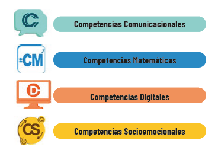

Fundamentos curriculares
Ecuador, 2025, 2026, 2027

¿Qué es el Currículo Priorizado?
Es el documento curricular general que delimita los aprendizajes básicos que los estudiantes desarrollan, cumpliendo el nivel de logro 1 de los estándares de calidad educativa. Se deriva del Currículo Nacional 2016.

Las Destrezas con Criterios de Desempeño (DCD) de las asignaturas que forman parte del Currículo priorizado con énfasis en competencias preparan a los niños, niñas y adolescentes para desenvolverse en la cotidianidad de forma eficaz y deben ser desarrolladas considerando su importancia en el contexto actual. Las destrezas con criterios de desempeño están estructuradas por habilidades, contenidos de aprendizaje y procedimientos de diferente nivel de complejidad que brindan a los estudiantes la oportunidad de ser más eficaces en la aplicación de los conocimientos adquiridos en actividades de su vida cotidiana.
Los indicadores de evaluación corresponden a los descriptores de logros de aprendizaje que los estudiantes deben alcanzar en los diferentes subniveles de la Educación General Básica y en el nivel de Bachillerato General Unificado. En el caso de los indicadores de evaluación que han sido desagregados, se ha colocado el código de referencia, con la sigla Ref. (Referencia del indicador). Los docentes priorizarán en sus procesos de enseñanza el logro de los aprendizajes de los estudiantes; por ello, prestarán mayor atención a los indicadores de evaluación de las diferentes asignaturas que conforman el Currículo Priorizado.
El énfasis en estas competencias tiene por objetivo indicar con claridad en qué destrezas se acentúa el proceso de aprendizaje para la recuperación y el fortalecimiento de las competencias fundamentales del siglo XXI; para esto se toma en cuenta los criterios de desempeño y sus respectivos indicadores.
El Currículo Priorizado se organiza por áreas del conocimiento, lo cual promueve un enfoque interdisciplinario que permite un desarrollo integral para asegurar que un tema pueda ser tratado desde diferentes perspectivas teóricas y prácticas. La visión interdisciplinar acentúa el enfoque de integralidad, resalta las conexiones entre las áreas de conocimiento y permite una comprensión más global de los fenómenos estudiados. Las instituciones educativas disponen de autonomía y flexibilidad pedagógica y organizativa para el desarrollo y la concreción de este currículo y, también, para adaptarlo a las necesidades de los estudiantes y a las características específicas de su contexto social y cultural en las diferentes modalidades de estudio: presencial, semipresencial y a distancia.
Las cuatro competencias del Currículo Priorizado
Competencias comunicacionales
Las competencias comunicacionales hacen referencia a las habilidades de comprensión y producción de textos de todo tipo y en toda situación comunicativa en todas las áreas del conocimiento. También incluyen las habilidades esenciales que permiten que los hablantes efectúen los diferentes actos de habla con pertinencia y fluidez. Esto tiene como objeto un uso efectivo de la lengua a través de la escucha activa y la enunciación ordenada y coherente de ideas en otras palabras.
En este contexto, la lectura toma un rol fundamental como fuente de información y estudio. Es el pilar esencial para el crecimiento intelectual y humano. A través de la lectura se aprenden habilidades cognitivas superiores como: reflexión, espíritu crítico, pensamiento complejo, conciencia, creatividad y construcción de nuevos conocimientos.
Hablar. Habilidad relacionada con la organización, estructura y producción del discurso oral de forma coherente.
Escuchar. Comprensión auditiva que se refiere a la capacidad para decodificar elementos lingüísticos y paralingüísticos con el objetivo de atender y comprender un mensaje.
Leer. La lectura involucra dos actividades principales: 1) la decodificación literal, 2) la comprensión del significado del texto. Según Cassany, leer es comprender e involucra tipos de lectura, así como la construcción del “Perfil del buen lector”.
Escribir. La escritura tiene que ver con el desarrollo de habilidades para la producción escrita. Para descubrir las funciones de la escritura, es importante relacionarla con la oralidad y la lectura. Es importante considerar que se lee para escribir, se escribe para leer, se escucha para hablar o escribir, se habla para escribir, y se escribe para hablar.
Competencias matemáticas
Las competencias matemáticas son habilidades que un individuo adquiere y desarrolla a lo largo de su vida, a través de utilizar y relacionar números, operaciones básicas, símbolos y formas de expresión y razonamiento matemático. Las competencias matemáticas se articulan con las competencias del siglo XXI, las cuales son: resolución de problemas, toma de decisiones y pensamiento crítico.
Con las competencias matemáticas podremos fortalecer un razonamiento lógico, argumentado, expresado y comunicado, integrando diversos conocimientos para dar respuesta a problemas en diferentes contextos de la vida cotidiana. Por otro lado, estas competencias permiten al estudiante buscar el significado de la verdad y la justicia, además de comprender lo que implica vivir en una sociedad democrática, equitativa e inclusiva, para así actuar con ética, integridad y honestidad.
Las habilidades matemáticas se caracterizan como las acciones y operaciones que se ejecutan en cualquier actividad para la comprensión de la vida cotidiana (Ferrer M., 2010).
Formación y utilización de conceptos y propiedades. Comprenden y aprenden importantes conceptos matemáticos, los cuales se desarrollan o se conectan entre sí, ayudándolos a crear nuevos conocimientos, saberes y capacidades.
Elaboración y utilización de procedimientos algorítmicos. Comprenden el establecimiento, reproducción o creación de sucesiones de logros para cumplir un objetivo parcial o final en la solución de una clase de ejercicios o problemas. Aparecen frecuentemente como pasos necesarios en la etapa de ejecución del plan de la solución de un problema.
Utilización de procedimientos heurísticos. Comprenden la identificación y utilización de principios, reglas y estrategias heurísticas para la búsqueda de vías de solución, que caracterizan técnicas específicas o generales para resolver problemas matemáticos.
Análisis y solución de situaciones problémicas. Comprenden la aplicación del conocimiento para el análisis y la comprensión de ejercicios y problemas. Se estimulan a partir de una situación matemática o de la vida, dada en el lenguaje común o en el lenguaje matemático. No constituyen ejercicios formales con una orden directa.
Competencias digitales
Son un conjunto de conocimientos y habilidades que facilitan el uso responsable de los dispositivos digitales, de las aplicaciones tecnológicas para la comunicación y de las redes, para acceder a la información y llevar a cabo una gestión adecuada de estos dispositivos.
Las competencias digitales básicas son las funciones fundamentales y convencionales que se requieren para la lectura, la escritura, el cálculo y el uso elemental de los dispositivos digitales y las aplicaciones en línea. Estas competencias permiten crear, intercambiar, comunicar y colaborar con contenidos digitales, así como dar solución a los problemas en el entorno digital, con miras a alcanzar un desarrollo eficaz y creativo en la vida, el trabajo y las actividades sociales en general (UNESCO, 2018).
Las competencias digitales abarcan el pensamiento computacional, que se entiende como el proceso por el cual un individuo, a través del pensamiento crítico, sabe identificar un problema informático, definirlo y encontrar una solución para él. El pensamiento computacional permite que las personas abandonen un rol pasivo como consumidores de tecnología para convertirse en analistas y creadores. Mientras que la ciudadanía digital es un conjunto de competencias que buscan fomentar el uso consciente, responsable, analítico y crítico del entorno digital en la sociedad (educación, cultura, política, economía, etc.), para generar una participación proactiva en la transformación social enmarcada en la ética, la convivencia, el respeto y conocimiento de nuestros deberes y derechos en el entorno digital.
Agenda educativa digital. Integración de TIC (Tecnologías de la Información y la Comunicación) en los procesos educativos TAC (Tecnologías del Aprendizaje y del Conocimiento).
Aprendizaje digital. Desarrollo de competencias digitales.
Ciudadanía digital. Uso de tecnologías digitales Ciudadanía y recursos digital educativos digitales para el aprendizaje.
Para promover una cultura preventiva en el uso adecuado de las tecnologías digitales y la navegación en internet, se debe orientar a niñas, niños, adolescentes y familias acerca de los beneficios, riesgos y peligros. No solo se trata de desarrollar competencias digitales básicas en la selección de contenidos, sino también aportar a su desarrollo personal y humano con el uso adecuado de las TIC.
Competencias socioemocionales
Se definen como el conjunto de conocimientos, capacidades, habilidades y actitudes necesarias para comprender, expresar y regular de forma apropiada los fenómenos emocionales (Bisquerra Alzina, 2003). El aprendizaje incluye tanto los aspectos cognitivos como los no cognitivos, es decir, los emocionales y éticos. Su objetivo es brindar igualdad de oportunidades a las niñas, niños y adolescentes del Sistema Nacional de Educación, fomentando el desarrollo humano integral y la prevención de todo tipo de violencias y riesgos psicosociales.
El desarrollo de las competencias socioemocionales permite que los estudiantes trabajen e integren en su vida los conceptos, valores, actitudes y habilidades que les ayuden a comprender y a manejar sus emociones, construir una identidad personal, mostrar atención y cuidado hacia los demás, colaborar, establecer relaciones positivas, tomar decisiones responsables, y aprender a manejar situaciones desafiantes y complejas de manera constructiva y ética. Con ello, se pretende definir un proyecto de vida y lograr cualquier propósito planteado de cara a los nuevos retos que la sociedad impone.
La inclusión de las competencias socioemocionales fortalece el proceso de enseñanza y aprendizaje como parte de una educación integral de calidad y calidez, que permite mejorar tanto la eficacia personal y educativa de los estudiantes como la del sistema educativo, lo cual contribuye al desarrollo y fortalecimiento de una mejor sociedad.
Las diez habilidades para la vida
Las destrezas con criterios de desempeño del Currículo Priorizado que han sido vinculadas con las competencias socioemocionales permiten desarrollar, de manera análoga, las diez habilidades para la vida planteadas por la Organización Mundial de la Salud: autoconocimiento, empatía, comunicación asertiva, relaciones interpersonales, toma de decisiones, resolución de problemas y conflictos, pensamiento crítico, manejo de emociones y sentimientos, manejo de tensiones y estrés. Es indispensable fortalecer esta visión integral de la educación, a través del desarrollo y fortalecimiento de las habilidades socioemocionales (habilidades para la vida) como parte importante de una educación integral.
Habilidades para el control de emociones
Confianza, cooperación y empatía
Habilidades para negociación/ rechazo
Comunicación
Habilidades sociales o interpersonales
Control y monitoreo personal
Toma de decisiones
Pensamiento crítico y autoevaluación
Habilidades cognitivas
Habilidades para la vida priorizadas en el sistema educativo nacional
Autoconocimiento. Reconocer sus fortalezas y sus limitaciones e identificar lo que necesita para mejorar. Reconocer sus errores en los trabajos escolares e intentarlo nuevamente. Reconocer sus errores en las relaciones sociales y enmendarlas.
Manejo de emociones. Ser capaz de expresar e identificar sentimientos en su propio cuerpo y en el de las demás personas. Tener la capacidad de autorregulación ante situaciones que no le satisfacen. Iniciar actitudes de empatía con sus iguales, como el desarrollo de habilidades sociales.
Empatía. Ponerse en el lugar del otro en situaciones cotidianas respetando las vivencias de las demás personas y colaborar de forma oportuna con los compañeros que lo requieran.
Resolución de conflictos. Encontrar soluciones creativas a los problemas individuales y colectivos.
Toma de decisiones. Ser capaz de tomar decisiones autónomas en las situaciones que le afectan en su familia, en la escuela y en la comunidad educativa.
¿Cómo trabajar la Diversidad Funcional en el Aula y las NEE?
Ejemplos de cómo trabajar la DFA en el aula
En caso de que exista una discapacidad o una dificultad auditiva.
Es importante situarse en un lugar donde la acústica sea mejor o desde donde se pueda realizar lectura labial.
Mantener el contacto visual.
Es necesario encontrar otras formas de comunicación (por ejemplo, escribir el mensaje que se quiere hacer llegar).
El tono de voz con el que se habla no debe ser exagerado o excesivo. Basta con que haya claridad al momento de comunicarse.
Si hay una discapacidad o dificultades visuales.
Es necesario ayudar, ya sea con una explicación de los sucesos visuales o con un resumen de lo que sucede alrededor.
Proporcionar referencias concretas. Es mejor decir: ‘a tu derecha’, ‘delante de ti’, ‘arriba’; esto en vez de: ‘aquí’, ‘ahí’, ‘allá’.
Permitir que la persona participe en exposiciones, por ejemplo, motivarle a hablar respecto a los conceptos que se están estudiando.
Cuando una persona tiene dificultades o problemas de motricidad.
Es importante saber que los desplazamientos y ritmos no siempre se ajustarán a los de los demás.
Es necesario que la persona participe en las clases, sin forzarla, pero tampoco subestimarla, dándole roles menores. Hay que dar un justo equilibrio a la actividad, dependiendo de la profundidad de la discapacidad.
Cuando hay dificultades atencionales.
Los trabajos que se realizan suelen contener errores o inexactitudes. Es mejor enfocarse en los aciertos que en los ‘errores’.
Es importante respetar los tiempos propios para terminar un trabajo.
Es fundamental hacerle saber que siempre puede preguntar en caso de duda, y las veces que sean necesarias.
Clasificación de las necesidades educativas especiales (NEE)
Necesidades educativas especiales no asociadas a la discapacidad
Doteción superior: Altas capacidades intelectuales
Dificultades específicas de aprendizaje: Dislexia, discalculia, disgrafía, disortografía, disfasia, trastornos por déficit de atención e hiperactividad, trastornos del comportamiento, entre otras dificultades
Situaciones de vulnerabilidad: Enfermedades catastróficas, movilidad humana, menores infractores, víctimas de violencia, adicciones y otras situaciones excepcionales
Necesidades educativas especiales asociadas a la discapacidad
Discapacidad intelectual, física-motriz, auditiva, visual o mental
Multidiscapacidades
Trastornos generalizados del desarrollo (autismo, síndrome de Asperger, síndrome de Rett, entre otros)
Adaptación curricular
Una adaptación curricular es una estrategia educativa que permite afrontar las particularidades de la relación entre el estudiante y su ambiente. Esas particularidades podrían actuar como factores que originen una dificultad de aprendizaje. La adaptación curricular consiste en adecuar el currículo a las necesidades educativas del estudiante. Es decir, se adaptan los componentes puntuales del currículo nacional a las condiciones del caso específico del estudiante (condiciones que se identifican en el estudio de la NEE).
La adaptación curricular implica diseñar, aplicar y evaluar una estrategia de acomodación o ajuste de ciertos elementos del currículo ordinario, para que este pueda ser asimilado en toda la extensión y profundidad posibles y sea conveniente para el estudiante que presenta una NEE.
En otras palabras, una adaptación curricular es una herramienta que permite asumir la individualidad en el proceso de aprendizaje.
La adaptación curricular deber ser realizada para cada estudiante con NEE. Intervendrán los profesionales partícipes del proceso educativo. Las decisiones tomadas deben recogerse por escrito en el Documento Individual de Adaptación Curricular (DIAC).
Tipos de adaptaciones curriculares
Según el ente al que se dirige la adaptación
De centro: Responden a necesidades contextuales (acomodar el currículo a la realidad del centro y del número total de estudiantes) y a necesidades educativas especiales de estudiantes específicos. Incide sobre los objetivos educativos del centro, su proyecto educativo, su organización general, y es el referente para todos los docentes.
Del aula: Indican necesidades contextuales (acomodar el currículo a la realidad de la clase) y las NEE de los estudiantes que lo requieran. Incide en los objetivos educativos del ciclo, la secuencia de aprendizaje, la metodología y el sistema de evaluación.
De individuo: Expresan las necesidades educativas especiales de un estudiante en particular. Contemplan una gran variedad de estrategias destinadas a apoyar su proceso de aprendizaje. Pueden afectar a varios elementos del hexágono curricular.
Según el grado de incidencia de la adaptación sobre el currículo
De acceso al currículo: Modificaciones o provisión de recursos formales, como el tiempo y el espacio, materiales personales o comunicativos, que facilitan que los estudiantes con NEE puedan acceder al currículo ordinario o adaptado.
De elementos del currículo: Transformaciones que, tras un proceso de toma de decisiones, afectan a uno o varios elementos curriculares (objetivos, metodologías, secuencias, evaluación). Las adaptaciones significativas De elementos son las que se realizan en la planificación al eliminar o modificar sustancialmente los elementos del currículo esenciales del currículo (los contenidos, los objetivos y los criterios de evaluación).
Las adaptcaiones no significativas no afectan a las directrices básicas del currículo ordinario. Suponen, sobre todo, modificaciones en la metodología didáctica docente.
Según la duración de la adaptación
Temporal: Son aquellas modificaciones que se plantean por un tiempo determinado.
Permanente: Se trata de las modificaciones que se plantean para toda la escolaridad del estudiante.
Según el ámbito de intervención de la adaptación
Organizativo: Agrupa modificaciones realizadas sobre los elementos organizativos del centro; por ejemplo, en la distribución de estudiantes y docentes.
Pedagógico: Modificaciones realizadas, principalmente, en la metodología empleada por el docente, las actividades y el empleo de recursos que, por su plasticidad, permitan aprendizajes adecuados a las características peculiares de los estudiantes.
Arquitectónico: Son las modificaciones que se hacen en los elementos estructurales de un centro, para adecuar esa estructura a necesidades educativas especiales (eliminación de barreras arquitectónicas, equipos y laboratorios especiales, infraestructura adaptada a las NEE, entre otras).
Otros: Son las modificaciones que puedan plantearse en cualquier otro ámbito de intervención escolar, para atender las NEE de los estudiantes.
Grados de adaptaciones curriculares
Grado 1 o de acceso al currículo
Modificación a los elementos de acceso al currículo, dejando intacto el currículo en sí.
Textos en braille, material lúdico, multisensorial, eliminación de barreras arquitectónicas, entre otros.
Grado 2 o no significativa
Modificaciones en la metodología y la evaluación. Los objetivos educativos y criterios de desempeño pueden ser iguales a los del resto de la clase.
Grado 3 o significativa
Modificaciones específicas en elementos del currículo: objetivos, destrezas, contenidos, formas de evaluación y promoción al siguiente grado.
Adaptación curricular para los trastornos específicos de aprendizaje
Dislexia
Entre las dificultades comunes que se suele presentar están: rotaciones, inversiones, confusiones, omisiones, agregados y contaminaciones (en lo que respecta a la lectura).
Estrategias
Ejercicios de coordinación visomotriz, atención, memoria, lateralidad, percepción, discriminación auditiva y visual.
Autoverbalizaciones o frases.
Trabajo cooperativo.
Disortografía
Se identifican aspectos como inversiones de sonidos de grafemas, sílabas o palabras, errores visoespaciales, sustitución de letras que se diferencian por su posición espacial o por sus características visuales, omisiones de sílabas completas o cambio de palabras.
Estrategias
Realizar ejercicios de memoria visual y espacial.
Promover el uso del diccionario.
Escribir el significado de palabras que generan problemas.
Rotular el aula con palabras.
Disgrafía
Se reconoce cuando en la escritura se observan rotaciones, inversiones, confusiones, omisiones, agregados, contaminaciones y disociaciones.
Estrategias
Realizar ejercicios figura-fondo.
Apoyar con actividades lúdicas, como juegos de letras, crucigramas.
Repasar líneas, movimientos básicos: trozar, rasgar, moldear, pintar.
Realizar ejercicios dígito-manuales.
Trabajar en direccionalidad
Discalculia
Trastorno del aprendizaje que presenta difi cultades de inversiones numéricas, confusión de signos aritméticos, errores en las seriaciones numéricas, escritura incorrecta de números, ubicación incorrecta de los números para la realización de operaciones, etc.
Estrategias
Composición y descomposición de números.
Enseñar diversas estrategias para resolver un problema.
Ejercitar actividades de cálculo mental.
Adaptaciones curriculares a las discapacidades
Discapacidad intelectual
Las adaptaciones para este tipo de discapacidad deben enmarcase en los siguientes aspectos: verifi car que los recursos sean graduados y variados. En la comunicación, utilizar consignas concretas, compartir experiencias, brindar órdenes graduadas, funcionales, estimulando constantemente el lenguaje. Además, será importante el trabajo cooperativo, utilizando juegos y actividades variadas. La motricidad también deberá ser reforzada constantemente.
Discapacidad física-motora
Dentro de la institución será importante adaptar el medio físico, rampas, letreros, pupitres. Es importante respetar el ritmo de cada estudiante y solicitar materiales acordes con las necesidades. El docente es el facilitador de un ambiente motivador; debe crear momentos en los que permita la interacción sin ningún tipo de exclusión.
Discapacidad visual
La adaptación en cuanto al ambiente físico deberá estar enmarcada en proveer información con relieve en sistema braille. La comunicación deber ser constante, directa, descriptiva (información detallada y vivencial). Para el proceso de enseñanza-aprendizaje, es recomendable el uso de material tridimensional, así como el trabajo cooperativo.
Discapacidad auditiva
Aplicación de lenguaje de señas, apoyo entre pares utilizando intérpretes. Realización de refuerzos académicos. Aplicación de técnicas de trabajo cooperativo.
Referencias
CURRÍCULO PRIORIZADO CON ÉNFASIS EN COMPETENCIAS COMUNICACIONALES, MATEMÁTICAS, DIGITALES Y SOCIOEMOCIONALES. Guía del Docente. Nivel de Bachillerato General. 2025.